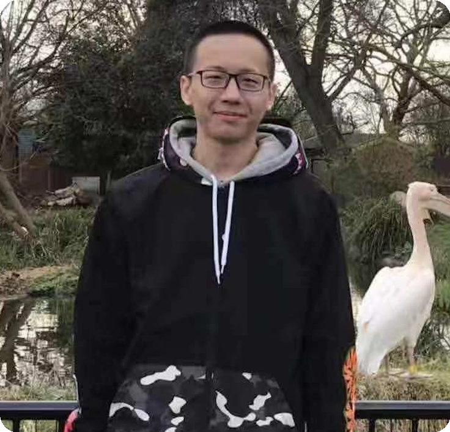
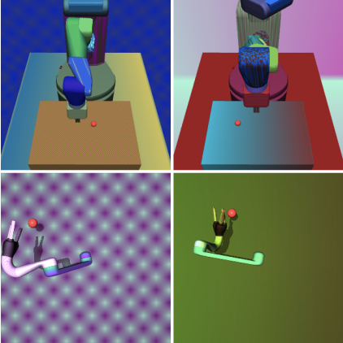
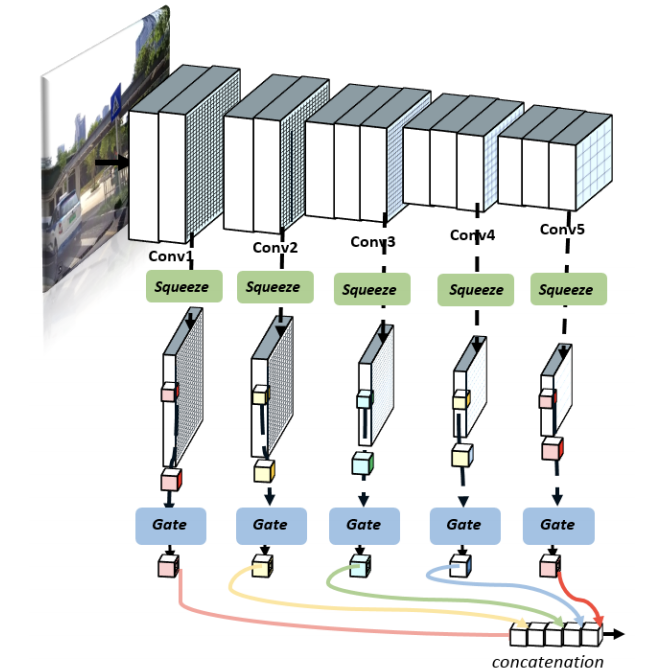
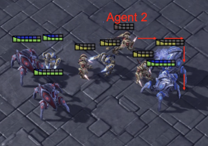
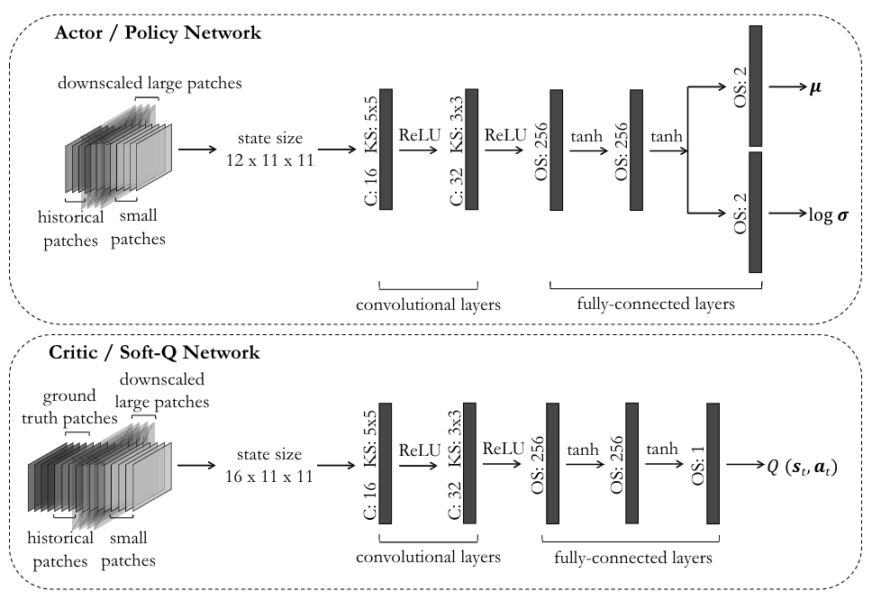
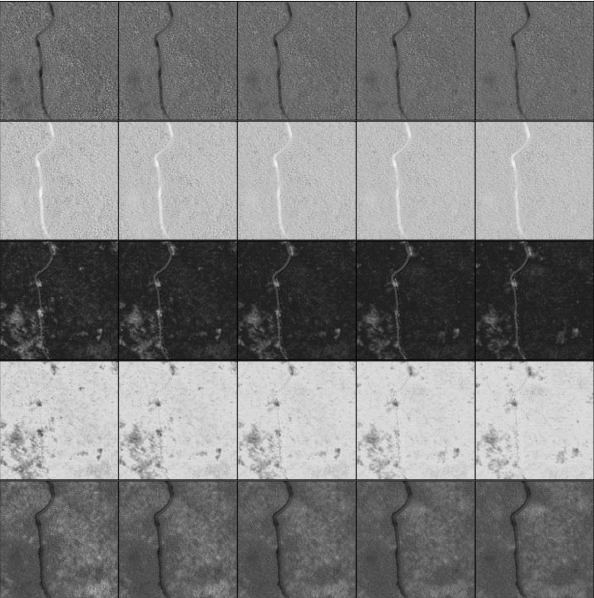
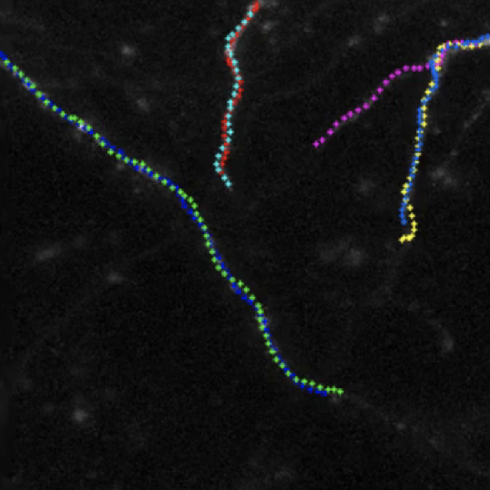
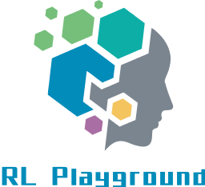

|
Tianhong Dai
I am a second year PhD candidate in Machine Learning at Imperial College London, under the supervision of Prof. Anil Bharath. My current research interests are Deep Reinforcement Learning, Machine Learning and Computer Vision.
In my spare time, I like playing basketball, playing video games, watching movies, coding and implementing state-of-the-art algorithms. I also like investigating digital circuits.
Email /
CV /
GitHub /
Google Scholar /
LinkedIn
|

|
|
Education
-
PhD in Machine Learning, Imperial College London
Oct. 2017 - Apr. 2022 (Expected)
-
MSc in Communication and Signal Processing, Imperial College London
Oct. 2015 - Sep. 2016
-
BEng in Electronic and Communication Engineering, University of Liverpool
Sep. 2013 - Jun. 2015
-
BEng in Electronic and Communication Engineering, Xi'an Jiaotong Liverpool University
Sep. 2011 - Jun. 2013
|
|
Working Experience / Activities
-
Research Intern (advised by Dr. Meng Fang) in Tencent AI Lab / Robotics X (Shenzhen, China) Mar. 2019 - Sep. 2019
-
Invited to give a PyTorch Tutorial in Alan Turing Institute (London, United Kingdom)
Aug. 2018
-
Summer Intern in Perkins Shibaura Engines (Wuxi) Co., Ltd (Wuxi, China)
July. 2014 - Aug. 2014
|
|
Publications (* Equal Contributions)
|
|

|
Analysing Deep Reinforcement Learning Agents Trained with Domain Randomisation
Tianhong Dai*,
Kai Arulkumaran*,
Samyakh Tukra,
Feryal Behbahani,
Anil Anthony Bharath
arxiv Preprint, 2019
pdf /
bibtex
Domain randomisation is one of the most popluar method which can train agents in simulation, and then transfer them to the real world. However, less work has gone into understanding such agents. In this work we examine such agents, through qualitative and quantitative comparisons between agents trained with and without visual domain randomisation, in order to provide a better understanding of how they function.
|
|

|
Gated Multi-layer Convolutional Feature Extraction Network for Robust Pedestrian Detection
Tianrui Liu,
Jun-Jie Huang,
Tianhong Dai,
Guangyu Ren,
Tania Stathaki
arxiv Preprint, 2019
pdf /
bibtex
In this paper, we propose a gated multi-layer convolutional feature extraction method which can adaptively generate discriminative features for candidate pedestrian regions.
|
|

|
LIIR: Learning Individual Intrinsic Reward in Multi-Agent Reinforcement Learning
Yali Du*,
Lei Han*,
Meng Fang,
Ji Liu,
Tianhong Dai,
Dacheng Tao
33rd Conference on Neural Information Processing Systems (NeurIPS), 2019
pdf /
bibtex
We have proposed a novel multi-agent reinforcement learning algorithm, which learns an individual intrinsic reward for each agent. The method can assign each agent a distinct intrinsic reward so that the agents are stimulated differently, even when the environment only feedbacks a team reward.
|
|

|
A Maximum Entropy Deep ReinforcementLearning Neural Tracker
Shafa Balaram,
Kai Arulkumaran,
Tianhong Dai,
Anil Anthony Bharath
International Workshop on Machine Learning in Medical Imaging (MLMI), 2019
pdf /
bibtex
We introducea maximum entropy continuous-action DRL neural tracker capable oftraining from scratch in a complex environment in the presence of highnoise levels, Gaussian blurring and cell detractors.
|
|

|
Image Synthesis with a Convolutional Capsule Generative Adversarial Network
Cher Bass,
Tianhong Dai,
Benjamin Billot,
Kai Arulkumaran,
Antonia Creswell,
Claudia Clopath,
Vincenzo De Paola,
Anil Anthony Bharath
International Conference on Medical Imaging with Deep Learning (MIDL), 2019
pdf /
bibtex
We introduce CapsPix2Pix, which combines convolutional capsules with the pix2pix framework, to synthesise images conditioned on class segmentation labels. We apply our approach to a new biomedical dataset of cortical axons imaged by two-photon microscopy, as a method of data augmentation for small datasets.
|
|

|
Deep Reinforcement Learning for Subpixel Neural Tracking
Tianhong Dai,
Magda Dubois,
Kai Arulkumaran,
Jonathan Campbell,
Cher Bass,
Benjamin Billot,
Fatmatulzehra Uslu,
Vincenzo de Paola,
Claudia Clopath,
Anil Anthony Bharath
International Conference on Medical Imaging with Deep Learning (MIDL), 2019
pdf /
bibtex
We formulate tracking as a reinforcement learning problem, and apply deep reinforcement learning techniques with a continuous action space to learn how to track at the subpixel level.
|
|

|
RL-Playground
Tianhong Dai
GitHub, 2018
code
This repository will implement the classic deep reinforcement learning algorithms by using PyTorch. The aim of this repository is to provide clear code for people to learn the deep reinforcemen learning algorithms. In the future, more algorithms will be added and the existing codes will also be maintained.
|
The original template of this page can be found from here.
|
|
{kind=link}